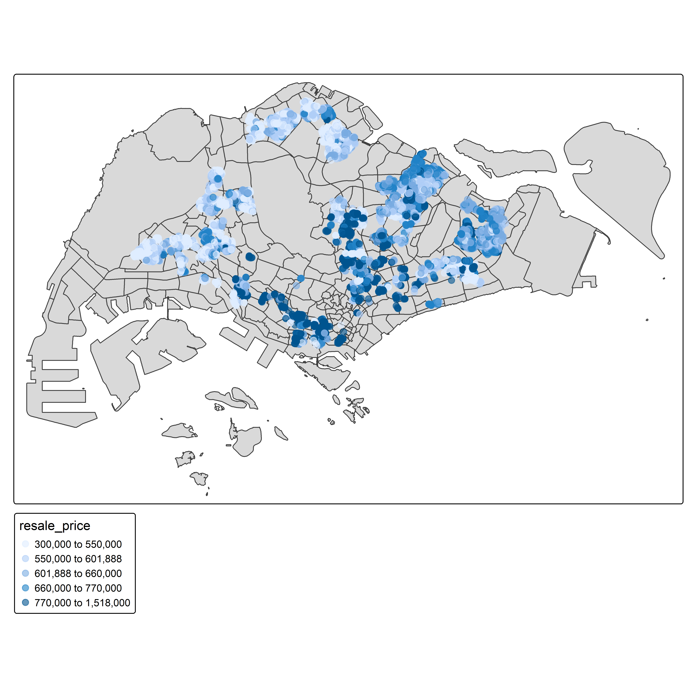
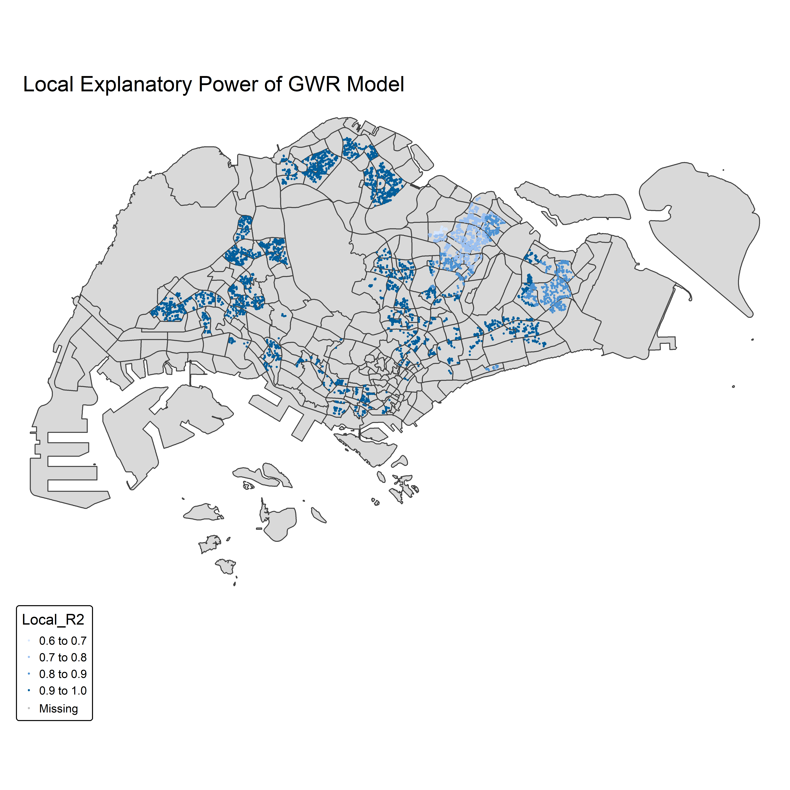
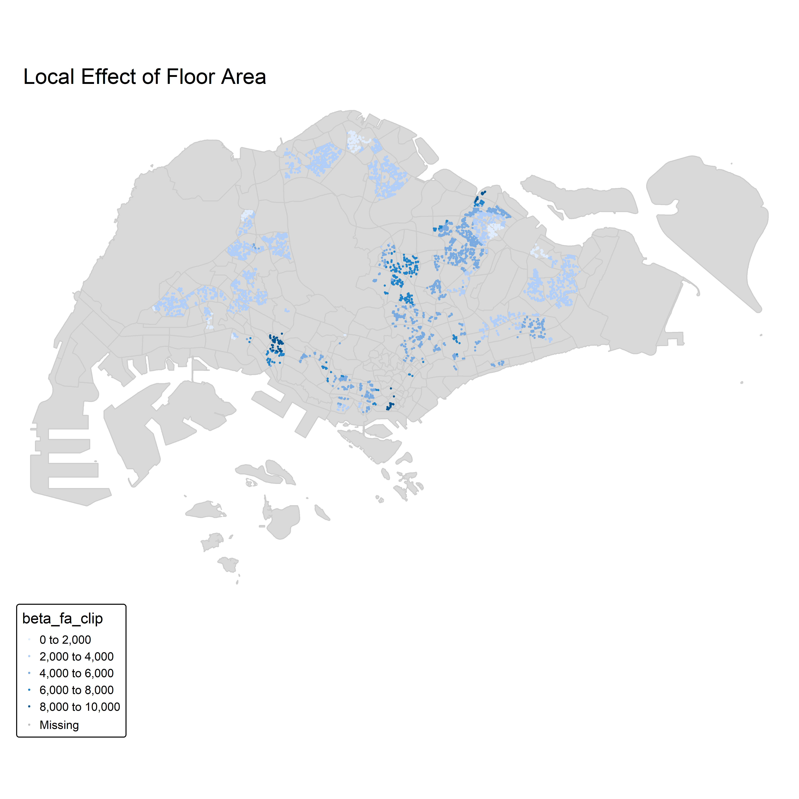
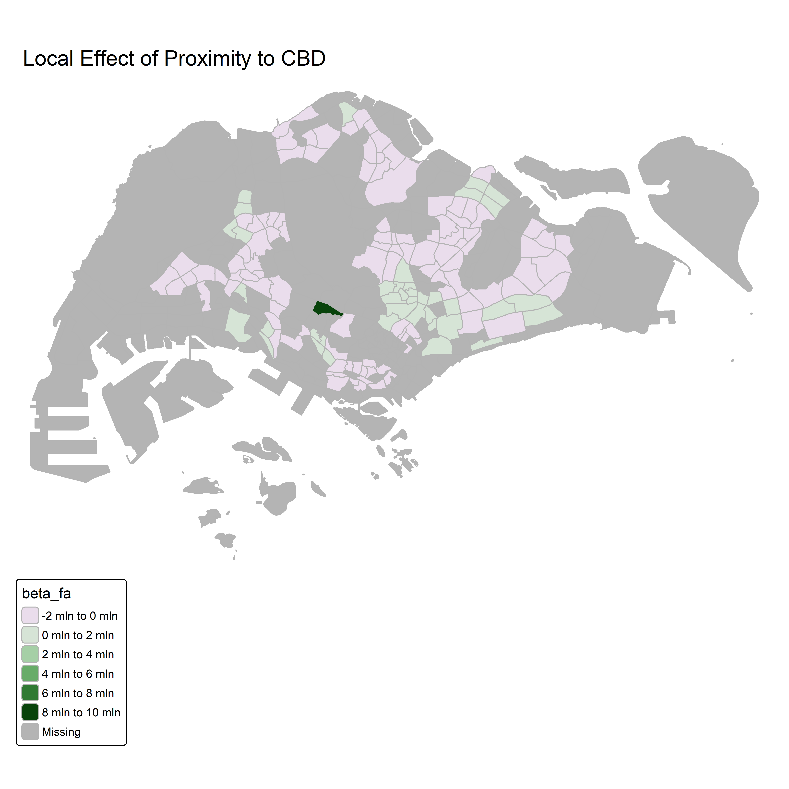
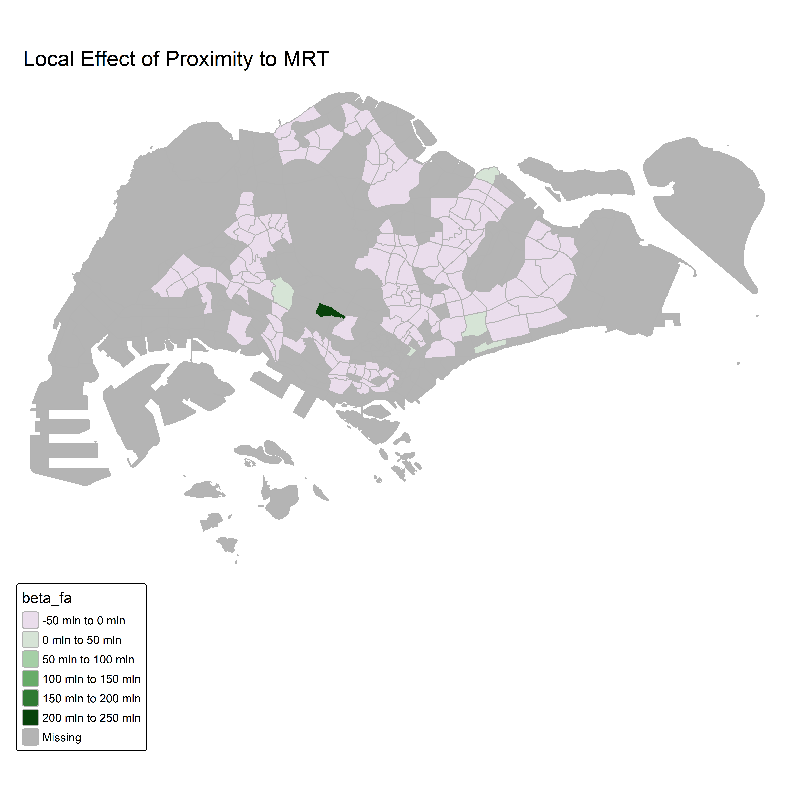
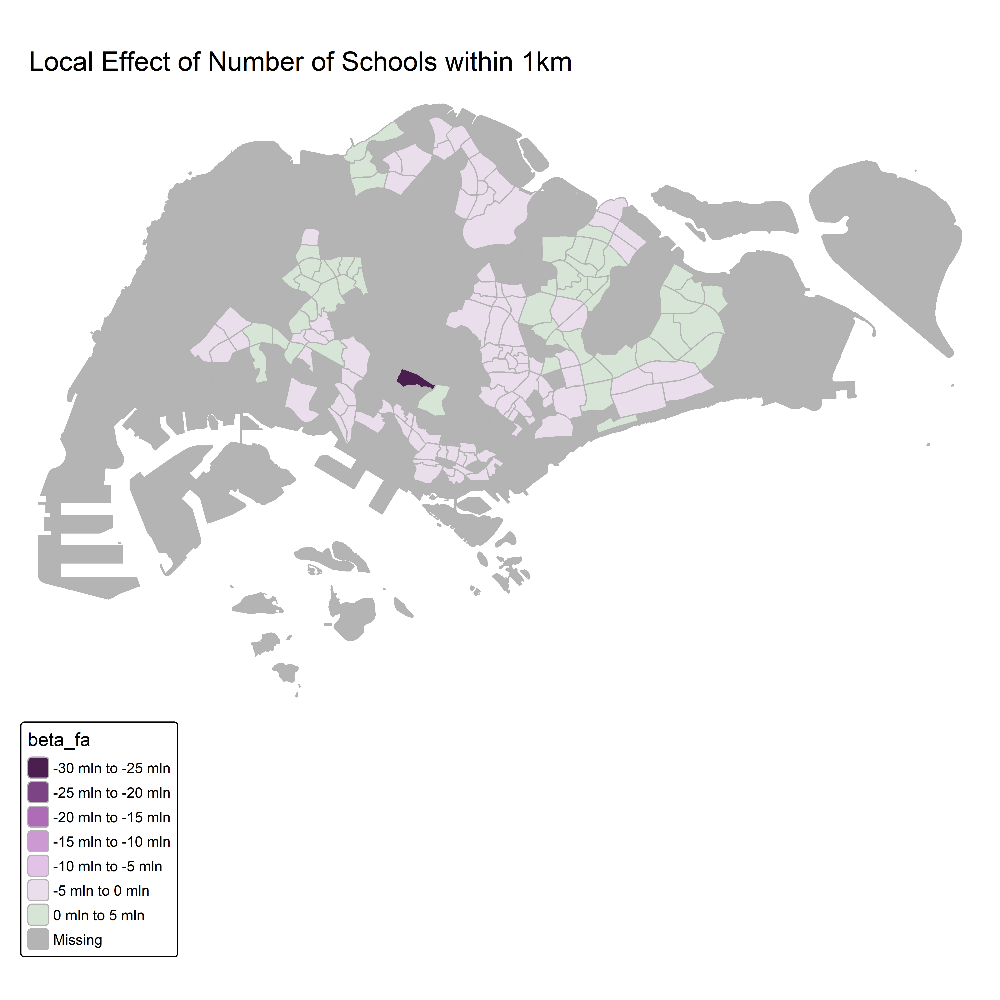
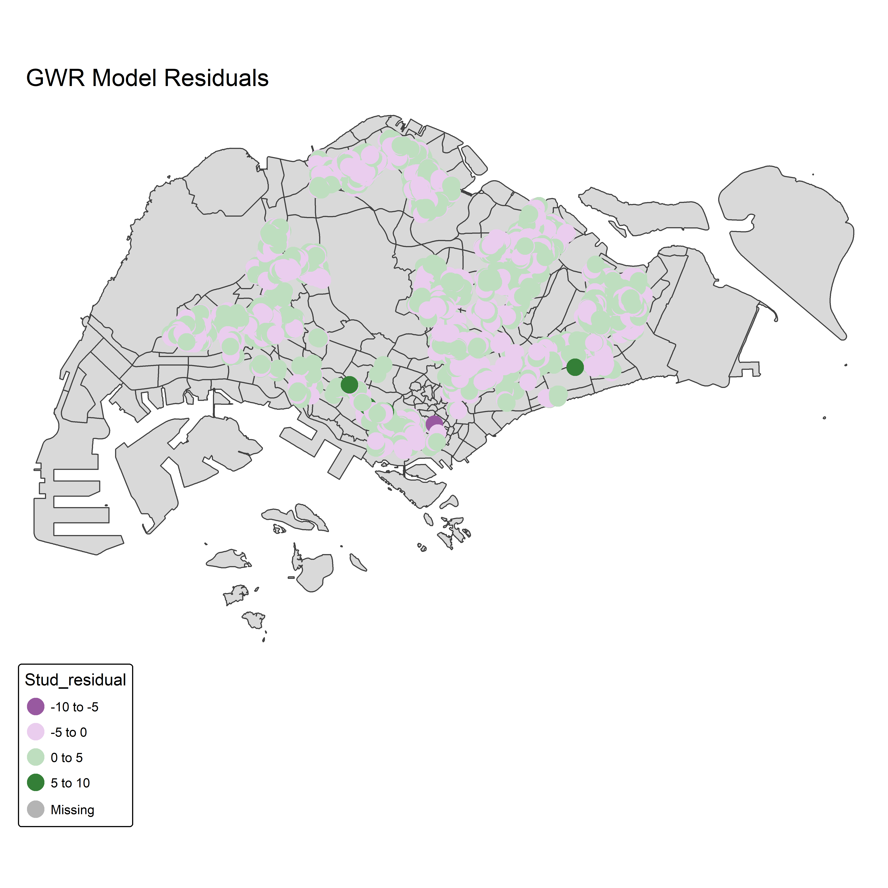

pacman::p_load(tidyverse, sf, tmap, GWmodel, olsrr, ggplot2, spdep, gtsummary)Take-home Exercise 3: Modelling HDB Resale Prices with Geographically Weighted Methods
1 Introduction
via: PropertyGuru
1.1 Overview
Housing represents one of the most significant forms of wealth in Singapore, and the resale market for Housing and Development Board (HDB) flats plays a vital role in determining household mobility and affordability. The resale price of an HDB flat is influenced by many factors: both structural (e.g., floor area, lease balance, floor level) and locational (e.g., accessibility to public transport, proximity to schools, parks, etc).
Traditional regression models such as Ordinary Least Squares (OLS) have been widely used to explain variations in housing prices. However, housing transactions are inherently spatial, as nearby units often share similar price due to spatial dependence or location effects. As a result, OLS models may lead to biased or inefficient estimates.
1.2 Objective
This exercise aims to develop a spatially informed model that identifies and evaluates the factors influencing HDB 4-room resale flat prices in Singapore between 1 January 2025 and 30 September 2025. Specifically, we want to address the following questions:
Which structural and locational factors significantly influence 4-room HDB resale prices?
How do these relationships vary spatially across different neighbourhoods in Singapore?
Does the geographically weighted approach provide better model performance compared to traditional OLS regression?
2 Getting Started
2.1 The Packages
In this exercise, we will use following packages:
| Package | Description |
|---|---|
| sf | Provides functions to manage, processing, and manipulate Simple Features, a formal geospatial data standard that specifies a storage and access model of spatial geometries such as points, lines, and polygons. |
| tidyverse | Provides collection of functions for performing data science task such as importing, tidying, wrangling data and visualising data. |
| tmap | Provides functions for plotting cartographic quality static point patterns maps or interactive maps by using leaflet API. |
| GWmodel | R package for calibrating geographical weighted family of models |
| spdep | A collection of functions to create spatial weights matrix objects from polygon ‘contiguities’ |
| gtsummary | Provides an elegant and flexible way to create publication-ready summary tables in R. |
| olsrr | R package for building OLS and performing diagnostics tests |
| ggplot2 | Provides graphics plots and mappings. |
2.2 Datasets
| Dataset Name | Description | Format | Source |
|---|---|---|---|
| HDB Resale | Resale flat prices based on registration date from Jan-2017 onwards | CSV | data.gov.sg |
| Singapore Master Plan 2019 (URA) Zoning Data | Singapore’s land-use zones: residential, commercial, mixed-use, industrial | KML | data.gov.sg |
| Bus Stop Location | A point representation to indicate the position where buses should stop to pick up or drop off passengers | SHP | LTA DataMall |
| Shopping Mall coordinates | Names of all the shopping malls in Singapore and their respective coordinates. The list was gathered from wikipedia through web scraping and their coordinates were gathered using onemap api. | CSV | Kaggle |
| Eldercare Services | Directory of Eldercare Services (MOH) | KML | data.gov.sg |
| Hawker Centres (KML) | Directory of Hawker Centres (NEA - National Environment Agency) | KML | data.gov.sg |
| LTA MRT Station Exit (KML) | Land Transport Authority. (2018). LTA MRT Station Exit (KML) (2024) [Dataset]. data.gov.sg. Retrieved October 29, 2025 | KML | data.gov.sg |
| LTA School Zone (KML) | Land Transport Authority. (2016). LTA School Zone (KML) (2024) [Dataset]. data.gov.sg. Retrieved October 29, 2025 | KML | data.gov.sg |
| Park Facilities | Contains the representative location of facilities in Parks which are under the purview of the National Parks Board. | GEOJSON | data.gov.sg |
| Pre-Schools Location | Early Childhood Development Agency. (2023). Pre-Schools Location (2024) [Dataset]. data.gov.sg. Retrieved October 29, 2025 | KML | data.gov.sg |
| Supermarkets (KML) | Singapore Food Agency. (2018). Supermarkets (KML) (2024) [Dataset]. data.gov.sg. Retrieved October 29, 2025 | KML | data.gov.sg |
2.3 Importing datasets to R environment & Geocoding
Importing HDB Resale Price Dataset
The data set comprises of HDB resale transactions from Jan 2017 onwards. For the purpose of this exercise, the code chunk below will be used to extract a sub-set of transaction records on 4-Room flat transacted from 1 January 2025 to 30 September 2025.
HDBresale <- read_csv("data/aspatial/HDBresale.csv") %>%
filter(flat_type == "4 ROOM") %>%
filter(month >= "2025-01" & month < "2025-10")In Singapore, sometimes “St” comes at the beginning of the street name and stands for “Saint”, meanwhile those “St” at the end stand for “Street”. To avoid complications, we will rename those street names with “St” at the beginning to the full “Saint” (for example Saint George’s Rd).
HDBresale$street_name <- gsub (
"ST\\.", "SAINT",
HDBresale$street_name
)Geocoding HDB resale data
We prepare a geocoding function by using the code chunk below. It aims to perform the following tasks:
Combining the block and street name into an address. The addresses will be used to geocode instead of postal code,
Passing the address as the searchVal in our query,
Sending the query to OneMapSG search. Note: Since we don’t need all the address details, we can set getAddrDetails as ‘N’,
Converting response (JSON object) to text,
Saving response in text form as a dataframe, and
Retain the latitude and longitude for our output.
geocode <- function(block, streetname) {
base_url <- "https://onemap.gov.sg/api/common/elastic/search"
address <- paste(block, streetname, sep = " ")
query <- list("searchVal" = address,
"returnGeom"= "Y",
"getAddrDetails" = "N",
"pageNum" = "1")
res <- GET(base_url, query = query)
restext <- content(res, as="text")
output <- fromJSON(restext) %>%
as.data.frame %>%
select(results.LATITUDE, results.LONGITUDE)
return(output)
}HDBresale$LATITUDE <- 0
HDBresale$LONGITUDE <- 0
for(i in 1:nrow(HDBresale)){
temp_output <- geocode(HDBresale[i, 4], HDBresale[i, 5])
HDBresale$LATITUDE[i] <- temp_output$results.LATITUDE
HDBresale$LONGITUDE[i] <- temp_output$results.LONGITUDE
}After retrieving the lat/long output, we convert them into sf object with location coordinates, and set projected coordinates system to SVY21.
HDBresale_sf <- HDBresale %>%
st_as_sf(coords = c("LONGITUDE", "LATITUDE"), crs = 4326) %>%
st_transform(crs = 3414)We save the HDBresale sf object and csv files so that we do not need to redo previous time-consuming steps. It also helps for later use.
saveRDS(HDBresale_sf, "data/rds/HDBresale_sf.rds")
write_csv(HDBresale, "data/rds/HDBresale_1.csv")glimpse(HDBresale_sf)Rows: 8,679
Columns: 12
$ month <chr> "2025-01", "2025-01", "2025-01", "2025-02", "2025-…
$ town <chr> "ANG MO KIO", "ANG MO KIO", "ANG MO KIO", "ANG MO …
$ flat_type <chr> "4 ROOM", "4 ROOM", "4 ROOM", "4 ROOM", "4 ROOM", …
$ block <chr> "337", "310C", "337", "226", "310C", "226", "304",…
$ street_name <chr> "ANG MO KIO AVE 1", "ANG MO KIO AVE 1", "ANG MO KI…
$ storey_range <chr> "13 TO 15", "10 TO 12", "10 TO 12", "07 TO 09", "2…
$ floor_area_sqm <dbl> 91, 94, 91, 91, 96, 92, 98, 97, 94, 87, 97, 82, 92…
$ flat_model <chr> "New Generation", "Model A", "New Generation", "Ne…
$ lease_commence_date <dbl> 1982, 2012, 1982, 1978, 2012, 1978, 1977, 1977, 20…
$ remaining_lease <chr> "56 years 03 months", "86 years 09 months", "56 ye…
$ resale_price <dbl> 582000, 865000, 530000, 560000, 1038000, 542000, 6…
$ geometry <POINT [m]> POINT (30036.29 38360.76), POINT (29283.45 3…3 Exploratory Data Analysis
We perform Exploratory Data Analysis (EDA) to have an early observation of the resale price distribution and how they are scattered on the map.
We can plot the distribution of resale_price by using ggplot as shown in the code chunk below.
ggplot(data=HDBresale_sf,
aes(x=`resale_price`)) +
geom_histogram(bins=20,
color="black",
fill="light blue")
Observation
The histogram shows that 4-room HDB resale prices are right-skewed, with the majority of transactions clustered between SGD 400,000 and SGD 700,000.
The peak lies around SGD 550,000, indicating that most resale transactions occur within this mid-range.
There is a long tail extending beyond SGD 1 million, reflecting a smaller number of high-value flats (likely in central or mature estates e.g., Bishan, Toa Payoh, Queenstown).
The positive skewness suggests that while most 4-room flats remain moderately priced, a minority of premium locations or newly upgraded flats significantly increase the upper price range.
Overall, this distribution highlights a heterogeneous housing market: dominated by mid-priced units, but with a clear presence of high-end units in desirable areas.
We will import Singapore Master Plan 2019 Zoning Data (re-used from Take-home Ex2) and have an overview of HDB resales and pricing distribution on the map.
mpsz <- read_rds("data/rds/mpsz.rds")
tmap_mode("plot")
tm_shape(mpsz)+
tm_polygons() +
tm_shape(HDBresale_sf) +
tm_dots(fill = "resale_price",
fill_alpha = 0.6,
size = 0.5,
fill.scale = tm_scale_intervals(
style="quantile")) 
Obsevation
HDB resale activities are unevenly distributed across Singapore. Clusters of frequent resales are observed in mature housing estates, particularly in:
Central-north areas (e.g. Ang Mo Kio, Toa Payoh, Bishan).
Tampines and Bedok - dense eastern estates.
Jurong West and Bukit Batok - large western residential zones.
In contrast, fewer resale transactions are seen in newer or smaller estates such as Punggol, Sengkang, and Bukit Panjang.
In term of pricing:
Higher resale prices (dark blue) are concentrated in central and mature estates (eg Bishan, Toa Payoh, Queenstown, parts of Kallang/Whampoa).
Lower resale prices (light blue) are in northern and northeastern towns (eg Woodlands, Yishun, Punggol, and Sengkang).
Overall, the map suggests a clear price gradient decreasing outward from the Central Region, illustrating how location and accessibility continue to drive HDB resale values.
4 Data Wrangling & Factors Selection for Modelling
4.1 Structural Predictors
These structural factors below will be selected to be included in the model. They are extracted from the HDBresale dataset but require some preparation:
Area of the unit (
floor_area_sqm) can be used directly.Floor level
(storey_range)will be converted to average number (e.g. “10 TO 12” → 11).Remaining lease will be converted to numeric.
Age of the unit will be calculated: (
flat_age) = (2025 - lease_commence_date)
HDBclean <- HDBresale %>%
mutate(
storey_low = as.numeric(str_extract(storey_range, "^[0-9]+")),
storey_high = as.numeric(str_extract(storey_range, "[0-9]+$")),
floor_level = (storey_low + storey_high) / 2
) %>%
mutate(
remaining_lease_yrs = as.numeric(str_extract(remaining_lease, "^[0-9]+")),
remaining_lease_mths = as.numeric(str_extract(remaining_lease, "(?<=years )[0-9]+")),
remaining_lease_mths = ifelse(is.na(remaining_lease_mths), 0, remaining_lease_mths),
remaining_lease_yrs = remaining_lease_yrs + remaining_lease_mths / 12
) %>%
mutate(flat_age = 2025 - lease_commence_date)Redundant text fields such as the original remaining_lease or storey_range can be dropped to avoid duplication. Then the dataset will be converted to sf object:
HDBclean <- HDBclean %>%
select(-storey_range,
-remaining_lease,
-lease_commence_date,
-storey_low,
-storey_high,
-remaining_lease_mths)HDBclean_sf <- HDBclean %>%
st_as_sf(coords = c("LONGITUDE", "LATITUDE"), crs = 4326) %>%
st_transform(crs = 3414)4.2 Locational Factors
Spatial proximity variables will be included to capture neighbourhood characteristics that may influence resale prices. The variables are:
Numbers of kindergartens & childcare centers (Pre-schools) within 350m
preschool = st_read("data/geospatial/PreSchoolsLocation.kml") %>%
st_transform(crs = 3414)
within_350m <- st_is_within_distance(
HDBclean_sf, preschool, dist = 350)
HDBclean_sf <- HDBclean_sf %>%
mutate(preschool_350m = map_int(within_350m, length))Numbers of schools within 1km
sch_zone = st_read("data/geospatial/LTASchoolZoneKML.kml") %>%
st_transform(crs = 3414)
sch_within_1km <- st_is_within_distance(
HDBclean_sf, sch_zone, dist = 1000)
HDBclean_sf <- HDBclean_sf %>%
mutate(sch_1km = map_int(sch_within_1km, length))Numbers of bus stop within 350m
busstop = st_read("data/geospatial/BusStopLocation_Aug2025/BusStop.shp") %>%
st_geometry(busstop) %>%
st_transform(crs = 3414)
bus_within_350m <- st_is_within_distance(
HDBclean_sf, busstop, dist = 350)
HDBclean_sf <- HDBclean_sf %>%
mutate(bus_350m = map_int(bus_within_350m, length))Proxomity to CBD: for this study, we use Raffles Place MRT (approximately the center of the CBD) to estimate distance to CBD.
#reference point (Raffles Place MRT coords)
cbd <- data.frame(
name = "CBD",
lon = 103.851959,
lat = 1.283099
)
cbd_sf <- st_as_sf(cbd, coords = c("lon", "lat"), crs = 4326) %>%
st_transform(crs = 3414)
HDBclean_sf$prox_cbd_m <- as.numeric(st_distance(HDBclean_sf, cbd_sf))
#Convert to km
HDBclean_sf$prox_cbd_km <- HDBclean_sf$prox_cbd_m / 1000
HDBclean_sf <- HDBclean_sf %>%
select(-prox_cbd_m) %>%
rename(prox_cbd = prox_cbd_km)Proximity to eldercare: we need to build function to compute the distance to nearest eldercare center (km). This function can be used for other factors as well.
nearest_dist_km <- function(src_pts, poi_pts) {
idx <- st_nearest_feature(src_pts, poi_pts)
d <- st_distance(src_pts, poi_pts[idx, ], by_element = TRUE)
as.numeric(d) / 1000
}eldercare = st_read("data/geospatial/EldercareServicesKML.kml") %>%
st_transform(crs = 3414)
HDBclean_sf <- HDBclean_sf %>%
mutate(
prox_eldercare = nearest_dist_km(HDBclean_sf, eldercare))Proximity to foodcourt/hawker centres
hawker = st_read("data/geospatial/HawkerCentresKML.kml", quiet = TRUE) %>%
st_transform(crs = 3414)
HDBclean_sf <- HDBclean_sf %>%
mutate(
prox_hawker = nearest_dist_km(HDBclean_sf, hawker))Proximity to MRT
mrt = st_read("data/geospatial/LTAMRTStationExitKML.kml") %>%
st_transform(crs = 3414)
HDBclean_sf <- HDBclean_sf %>%
mutate(
prox_mrt = nearest_dist_km(HDBclean_sf, mrt))Proximity to supermarket
spm = st_read("data/geospatial/SupermarketsKML.kml") %>%
st_transform(crs = 3414)
HDBclean_sf <- HDBclean_sf %>%
mutate(
prox_spm = nearest_dist_km(HDBclean_sf, spm))Proximity to park
park = st_read("data/geospatial/ParkFacilities.geojson") %>%
st_transform(crs = 3414)
park = park %>%
select(-UNIQUEID, -NAME, -CLASS, -ADDITIONAL_INFO, -INC_CRC, -FMEL_UPD_D)
HDBclean_sf <- HDBclean_sf %>%
mutate(
prox_park = nearest_dist_km(HDBclean_sf, park))Proximity to shopping mall
mall = read_csv("data/geospatial/shopping_mall_coordinates.csv")
mall = mall %>%
st_as_sf(coords = c("LONGITUDE", "LATITUDE"), crs = 4326) %>%
st_transform(crs = 3414)
HDBclean_sf <- HDBclean_sf %>%
mutate(
prox_mall = nearest_dist_km(HDBclean_sf, mall))Finally, we rearrange the columns, rename and save for later use as the modelling dataset.
HDBmodel_sf <- HDBclean_sf %>%
relocate(sch_1km, bus_350m, preschool_350m, .after = last_col())
saveRDS(HDBmodel_sf, "data/rds/HDBmodel_sf.rds")HDBmodel_sf <- read_rds("data/rds/HDBmodel_sf.rds")
glimpse(HDBmodel_sf)Rows: 8,679
Columns: 22
$ month <chr> "2025-01", "2025-01", "2025-01", "2025-02", "2025-…
$ town <chr> "ANG MO KIO", "ANG MO KIO", "ANG MO KIO", "ANG MO …
$ flat_type <chr> "4 ROOM", "4 ROOM", "4 ROOM", "4 ROOM", "4 ROOM", …
$ block <chr> "337", "310C", "337", "226", "310C", "226", "304",…
$ street_name <chr> "ANG MO KIO AVE 1", "ANG MO KIO AVE 1", "ANG MO KI…
$ flat_model <chr> "New Generation", "Model A", "New Generation", "Ne…
$ geometry <POINT [m]> POINT (30036.29 38360.76), POINT (29283.45 3…
$ resale_price <dbl> 582000, 865000, 530000, 560000, 1038000, 542000, 6…
$ floor_area_sqm <dbl> 91, 94, 91, 91, 96, 92, 98, 97, 94, 87, 97, 82, 92…
$ floor_level <dbl> 14, 11, 11, 8, 29, 5, 11, 5, 17, 17, 5, 8, 11, 5, …
$ remaining_lease_yrs <dbl> 56.25000, 86.75000, 56.16667, 52.00000, 86.66667, …
$ flat_age <dbl> 43, 13, 43, 47, 13, 47, 48, 48, 13, 13, 49, 49, 47…
$ prox_cbd <dbl> 8.856749, 9.047928, 8.856749, 9.478640, 9.047928, …
$ prox_eldercare <dbl> 0.2597684, 0.2549544, 0.2597684, 0.3976108, 0.2549…
$ prox_hawker <dbl> 0.3874107, 0.3828329, 0.3874107, 0.1388183, 0.3828…
$ prox_mrt <dbl> 0.7178940, 0.7314224, 0.7178940, 0.3836496, 0.7314…
$ prox_spm <dbl> 0.2849091, 0.3144801, 0.2849091, 0.1862702, 0.3144…
$ prox_park <dbl> 0.33059573, 0.11386252, 0.33059573, 0.28050287, 0.…
$ prox_mall <dbl> 0.7562998, 0.6521127, 0.7562998, 0.9599891, 0.6521…
$ sch_1km <int> 4, 3, 4, 4, 3, 4, 3, 3, 3, 3, 2, 3, 4, 3, 3, 3, 4,…
$ bus_350m <int> 7, 4, 7, 7, 4, 7, 6, 7, 5, 5, 5, 5, 6, 4, 4, 4, 7,…
$ preschool_350m <int> 3, 6, 3, 7, 6, 7, 6, 8, 2, 2, 2, 2, 6, 7, 6, 6, 7,…5 Explanatory Modelling
In this section, we aim to identify and evaluate the factors influencing 4-room HDB resale prices across Singapore by comparing two modelling approaches:
Global Ordinary Least Squares (OLS) model, which assumes relationships are constant across space, and
Local Geographically Weighted Regression (GWR) model, which allows relationships to vary spatially.
5.1 Multiple Linear Regression Method (Global OLS Model)
The OLS model provides a baseline to assess how well structural and locational factors explain price variation across all flats, assuming spatial stationarity.
hdb.mlr <- lm(formula = resale_price ~ floor_area_sqm + flat_age + floor_level + remaining_lease_yrs + prox_cbd + prox_eldercare + prox_hawker + prox_mrt + prox_spm + prox_park + prox_mall + sch_1km + bus_350m + preschool_350m,
data=HDBmodel_sf)
summary(hdb.mlr)
Call:
lm(formula = resale_price ~ floor_area_sqm + flat_age + floor_level +
remaining_lease_yrs + prox_cbd + prox_eldercare + prox_hawker +
prox_mrt + prox_spm + prox_park + prox_mall + sch_1km + bus_350m +
preschool_350m, data = HDBmodel_sf)
Residuals:
Min 1Q Median 3Q Max
-278392 -48045 1184 43637 432733
Coefficients:
Estimate Std. Error t value Pr(>|t|)
(Intercept) 635981.7 206546.0 3.079 0.002083 **
floor_area_sqm 4968.1 122.9 40.420 < 2e-16 ***
flat_age -5939.2 2081.3 -2.854 0.004332 **
floor_level 5919.5 136.8 43.287 < 2e-16 ***
remaining_lease_yrs -115.2 2078.5 -0.055 0.955808
prox_cbd -21420.1 240.9 -88.914 < 2e-16 ***
prox_eldercare -4798.3 1392.6 -3.446 0.000572 ***
prox_hawker -26597.7 1739.2 -15.293 < 2e-16 ***
prox_mrt -47136.5 2379.6 -19.808 < 2e-16 ***
prox_spm 29518.0 4625.7 6.381 1.85e-10 ***
prox_park -20893.0 3611.3 -5.785 7.48e-09 ***
prox_mall -16796.4 2483.7 -6.763 1.44e-11 ***
sch_1km -4784.4 504.6 -9.481 < 2e-16 ***
bus_350m 909.9 296.8 3.065 0.002183 **
preschool_350m 223.0 305.9 0.729 0.466018
---
Signif. codes: 0 '***' 0.001 '**' 0.01 '*' 0.05 '.' 0.1 ' ' 1
Residual standard error: 73110 on 8664 degrees of freedom
Multiple R-squared: 0.7931, Adjusted R-squared: 0.7928
F-statistic: 2373 on 14 and 8664 DF, p-value: < 2.2e-16In the code chunk below, tbl_regression() is used to create a well formatted regression report, with model statistics included:
tbl_regression(hdb.mlr, intercept = TRUE) %>%
add_glance_source_note(
label = list(sigma ~ "\U03C3"),
include = c(r.squared, adj.r.squared,
AIC, statistic,
p.value, sigma))| Characteristic | Beta | 95% CI | p-value |
|---|---|---|---|
| (Intercept) | 635,982 | 231,103, 1,040,861 | 0.002 |
| floor_area_sqm | 4,968 | 4,727, 5,209 | <0.001 |
| flat_age | -5,939 | -10,019, -1,859 | 0.004 |
| floor_level | 5,920 | 5,651, 6,188 | <0.001 |
| remaining_lease_yrs | -115 | -4,190, 3,959 | >0.9 |
| prox_cbd | -21,420 | -21,892, -20,948 | <0.001 |
| prox_eldercare | -4,798 | -7,528, -2,069 | <0.001 |
| prox_hawker | -26,598 | -30,007, -23,188 | <0.001 |
| prox_mrt | -47,136 | -51,801, -42,472 | <0.001 |
| prox_spm | 29,518 | 20,450, 38,586 | <0.001 |
| prox_park | -20,893 | -27,972, -13,814 | <0.001 |
| prox_mall | -16,796 | -21,665, -11,928 | <0.001 |
| sch_1km | -4,784 | -5,774, -3,795 | <0.001 |
| bus_350m | 910 | 328, 1,492 | 0.002 |
| preschool_350m | 223 | -377, 823 | 0.5 |
| Abbreviation: CI = Confidence Interval | |||
| R² = 0.793; Adjusted R² = 0.793; AIC = 219,052; Statistic = 2,373; p-value = <0.001; σ = 73,110 | |||
Observation
The multiple linear regression model achieves a strong adjusted R² of 0.793, indicating that approximately 79% of the variation in HDB resale prices can be explained by the included structural and locational variables. The overall model is statistically significant (p < 0.001), confirming that the selected predictors jointly influence housing prices.
Structural factors (esp floor area and floor level) are consistent, strong price drivers.
Locational accessibility factors (eg proximity to MRT, CBD, and hawker centres) significantly increase flat prices.
Some unexpected signs (e.g., proximity to supermarkets or schools) indicate possible spatial heterogeneity that the OLS model cannot fully capture.
Spatial Diagnostics: OLS assumes residuals are spatially independent. This chunk below is to test for spatial autocorrelation:
coords <- st_coordinates(HDBmodel_sf)
nb <- knn2nb(knearneigh(coords, k = 8))
lw <- nb2listw(nb, style = "W")
moran.test(residuals(hdb.mlr), lw)
Moran I test under randomisation
data: residuals(hdb.mlr)
weights: lw
Moran I statistic standard deviate = 158.26, p-value < 2.2e-16
alternative hypothesis: greater
sample estimates:
Moran I statistic Expectation Variance
7.972084e-01 -1.152339e-04 2.538081e-05
Note
Moran’s I is significantly positive (p < 0.05). This result means that nearby HDB resale prices exhibit similar residual patterns,or spatially clustered. It implies that a spatially varying model, such as Geographically Weighted Regression (GWR), is needed to better capture local variations in how structural and locational factors affect HDB resale prices.
5.2 Geographically Weighted Regression (GWR)
Since housing prices often exhibit spatial heterogeneity (different factors matter more in different locations), GWR provides locally varying coefficients for each observation.
In the code chunk below bw.gwr() of GWModel package is used to determine the optimal bandwidth to use in the model. AIC corrected (AICc) approach is used to determine the stopping rule.
formula_gwr <- resale_price ~ floor_area_sqm + flat_age + floor_level + remaining_lease_yrs + prox_cbd + prox_eldercare + prox_hawker + prox_mrt + prox_spm + prox_park + prox_mall + sch_1km + bus_350m + preschool_350m
bw_gwr <- bw.gwr(formula_gwr, data = as_Spatial(HDBmodel_sf), approach = "AICc")
gwr_model <- gwr.basic(formula_gwr, data = as_Spatial(HDBmodel_sf), bw = bw_gwr)As this is a computational intensity and time consuming process, it is wiser to save the output as an rds file for future use without having to re-run the process again.
saveRDS(bw_gwr, "data/rds/bw_gwr.rds")
saveRDS(gwr_model, "data/rds/gwr_model.rds")This code chunk is to display the model output:
gwr_model ***********************************************************************
* Package GWmodel *
***********************************************************************
Program starts at: 2025-11-10 20:32:45.814239
Call:
gwr.basic(formula = formula_gwr, data = as_Spatial(HDBmodel_sf),
bw = bw_gwr)
Dependent (y) variable: resale_price
Independent variables: floor_area_sqm flat_age floor_level remaining_lease_yrs prox_cbd prox_eldercare prox_hawker prox_mrt prox_spm prox_park prox_mall sch_1km bus_350m preschool_350m
Number of data points: 8679
***********************************************************************
* Results of Global Regression *
***********************************************************************
Call:
lm(formula = formula, data = data)
Residuals:
Min 1Q Median 3Q Max
-278392 -48045 1184 43637 432733
Coefficients:
Estimate Std. Error t value Pr(>|t|)
(Intercept) 635981.7 206546.0 3.079 0.002083 **
floor_area_sqm 4968.1 122.9 40.420 < 2e-16 ***
flat_age -5939.2 2081.3 -2.854 0.004332 **
floor_level 5919.5 136.8 43.287 < 2e-16 ***
remaining_lease_yrs -115.2 2078.5 -0.055 0.955808
prox_cbd -21420.1 240.9 -88.914 < 2e-16 ***
prox_eldercare -4798.3 1392.6 -3.446 0.000572 ***
prox_hawker -26597.7 1739.2 -15.293 < 2e-16 ***
prox_mrt -47136.5 2379.6 -19.808 < 2e-16 ***
prox_spm 29518.0 4625.7 6.381 1.85e-10 ***
prox_park -20893.0 3611.3 -5.785 7.48e-09 ***
prox_mall -16796.4 2483.7 -6.763 1.44e-11 ***
sch_1km -4784.4 504.6 -9.481 < 2e-16 ***
bus_350m 909.9 296.8 3.065 0.002183 **
preschool_350m 223.0 305.9 0.729 0.466018
---Significance stars
Signif. codes: 0 '***' 0.001 '**' 0.01 '*' 0.05 '.' 0.1 ' ' 1
Residual standard error: 73110 on 8664 degrees of freedom
Multiple R-squared: 0.7931
Adjusted R-squared: 0.7928
F-statistic: 2373 on 14 and 8664 DF, p-value: < 2.2e-16
***Extra Diagnostic information
Residual sum of squares: 4.631015e+13
Sigma(hat): 73055.56
AIC: 219051.8
AICc: 219051.8
BIC: 210630.9
***********************************************************************
* Results of Geographically Weighted Regression *
***********************************************************************
*********************Model calibration information*********************
Kernel function: bisquare
Fixed bandwidth: 2584.819
Regression points: the same locations as observations are used.
Distance metric: Euclidean distance metric is used.
****************Summary of GWR coefficient estimates:******************
Min. 1st Qu. Median 3rd Qu.
Intercept -2.1030e+07 4.9369e+05 9.6438e+05 1.6583e+06
floor_area_sqm -2.5968e+05 2.7524e+03 3.2461e+03 4.8101e+03
flat_age -1.7955e+05 -1.7100e+04 -7.6253e+03 -3.0557e+03
floor_level -1.8691e+04 4.1436e+03 4.7338e+03 5.1689e+03
remaining_lease_yrs -1.7293e+05 -1.0184e+04 -2.6996e+03 2.7035e+03
prox_cbd -1.3446e+07 -2.9523e+04 -1.0694e+04 1.3245e+02
prox_eldercare -4.1122e+07 -2.5607e+04 -8.6952e+03 1.2971e+04
prox_hawker -2.9681e+08 -3.7248e+04 -5.2478e+03 1.8946e+04
prox_mrt -4.7517e+05 -1.2235e+05 -6.6235e+04 -4.1954e+04
prox_spm -1.9039e+05 -4.8757e+04 -1.1817e+04 2.4115e+04
prox_park -1.9844e+06 -3.2144e+04 -5.5512e+03 1.5139e+04
prox_mall -2.7548e+06 -3.3887e+04 -7.5842e+03 2.6185e+04
sch_1km -2.5463e+07 -5.8844e+03 -7.2382e+02 5.1657e+03
bus_350m -4.1001e+06 -1.3800e+03 3.6416e+02 2.0274e+03
preschool_350m -3.1274e+05 -1.4244e+03 -4.0945e+02 6.1941e+02
Max.
Intercept 1.2430e+08
floor_area_sqm 1.0971e+04
flat_age 1.6816e+05
floor_level 7.4014e+03
remaining_lease_yrs 3.7152e+04
prox_cbd 8.0370e+06
prox_eldercare 5.3731e+05
prox_hawker 7.5092e+05
prox_mrt 2.4594e+08
prox_spm 6.9815e+07
prox_park 4.4325e+06
prox_mall 7.0108e+07
sch_1km 5.0120e+04
bus_350m 1.3671e+04
preschool_350m 1.3801e+04
************************Diagnostic information*************************
Number of data points: 8679
Effective number of parameters (2trace(S) - trace(S'S)): 523.6298
Effective degrees of freedom (n-2trace(S) + trace(S'S)): 8155.37
AICc (GWR book, Fotheringham, et al. 2002, p. 61, eq 2.33): 206331.5
AIC (GWR book, Fotheringham, et al. 2002,GWR p. 96, eq. 4.22): 205851.9
BIC (GWR book, Fotheringham, et al. 2002,GWR p. 61, eq. 2.34): 200658.7
Residual sum of squares: 9.6637e+12
R-square value: 0.9568334
Adjusted R-square value: 0.9540614
***********************************************************************
Program stops at: 2025-11-10 20:33:02.73187 OLS vs. GWR comparison
| Metric | OLS | GWR | Interpretation |
|---|---|---|---|
| AICc | 219052 | 206332 | Large drop (≈ 12 700) → GWR fits data far better |
| R-square | 0.793 | 0.957 | Variance rises sharply → local variation captured |
| Adjusted R-square | 0.793 | 0.954 | Stronger overall explanatory power |
| Residual SD | ~73110 | ~39600 | Lower residual error → better local fit |
Note
The GWR model substantially improves model fit and predictive accuracy over the global OLS model. This confirms that relationships between housing prices and their determinants vary spatially across Singapore, rather than remaining constant city-wide.
Interpretation from GWR results:
| Variable | OLS vs GWR Median | GWR Range (Min - Max) | Interpretation |
|---|---|---|---|
| floor_area_sqm | ≈ +4968 → +5062 | 3886 → 7601 | Effect stronger in central/mature estates where space is scarce. |
| flat_age | -5939 → -6280 | -9654 → -3051 | Older flats depreciate more in older towns (e.g., Toa Payoh, Ang Mo Kio). |
| floor_level | +5920 → +6122 | +4836 → +7423 | Premium for high floors more apparent in dense central areas. |
| prox_cbd | -21420 → -21303 | -30676 → -13677 | Price gradient to CBD strongest in suburban areas, weaker in center areas. |
| prox_mrt | -47136 → -47046 | -61688 → -29346 | Accessibility premium greater in suburban regions with fewer lines. |
| prox_hawker | -26598 → -26412 | -37010 → -19323 | Accessibility to food is more valuable in newer estates. |
| prox_park | -20893 → -21037 | -30416 → -13610 | Green-space premium is higher in high-density zones. |
| prox_mall | -16796 → -17222 | -25780 → -10122 | Retail access matters more in surburban areas. |
Spatial heterogeneity is evident for nearly all predictors: the coefficients’ wide ranges show that the influence of each factor depends on local context.
Closer to the CBD, structural attributes (floor area, floor level) dominate price formation. In outlying towns (e.g., Punggol, Woodlands), locational accessibility (to MRT, malls, hawkers) exerts stronger effect.
The consistently negative distances (prox_* variables) confirm that proximity to amenities raises prices, but the level of effect varies geographically.
Age and remaining lease influence prices relatively uniformly across estates.
Summary
The GWR analysis confirms that HDB resale price factors are location-dependent. Structural factors (floor size, level) universally influence value, but locational effects such as proximity to MRT, hawker centres, parks, and CBD vary significantly across the island. This spatial heterogeneity highlights the importance of incorporating local context in urban valuation and policy planning, as a single global model cannot capture the complexity of Singapore’s housing market.
6 Geovisualization
Visualising model outputs helps reveal where and how strongly structural and locational factors influence resale prices. The maps produced from the GWR outputs display the spatial heterogeneity of coefficients and model fit across Singapore.
6.1 Local R² Map - Goodness of Fit
The results from GWR model will be converted to sf object for plotting. tmap() will be used in this code chunk below:
gwr_sf <- st_as_sf(gwr_model$SDF) %>%
st_as_sf(coords = c("LONGITUDE", "LATITUDE"), crs = 4326) %>%
st_transform(crs = 3414)
tmap_mode("plot")
tm_shape(mpsz)+
tm_polygons() +
tm_shape(gwr_sf) +
tm_dots(
col = "Local_R2",
col.scale = tm_scale(values = "YlGnBu"),
col.legend = tm_legend(title = "Local R²"),
size = 0.1, border.lwd = 0
) +
tm_title("Local Explanatory Power of GWR Model") +
tm_layout(frame = FALSE)
Note
Higher values concentrated in mature estates such as Bishan, Toa Payoh, Woodlands. This indicates that the GWR model explains resale-price variation extremely well in these regions, where market activity and data density are high. Lower R² in Punggol, Sengkang suggest uncertainty or different drivers not fully captured (e.g., newer flat designs or unmeasured factors). Overall, spatially varying R² confirms that model performance itself is location-dependent.
6.2 Spatial Variation in Key Predictors
a. Floor Area (sqm)
To make more effective visualization, we removes extreme outliers, so the value range (legend) isn’t dominated by a few points.
q <- quantile(gwr_sf$floor_area_sqm, c(.01,.99), na.rm = TRUE)
gwr_sf_fix <- gwr_sf %>%
mutate(beta_fa_clip = pmax(pmin(floor_area_sqm, q[2]), q[1]))
L <- max(abs(q))
lims <- c(-L, L)
tmap_mode("plot")
tm_shape(mpsz) + tm_polygons(border.col = "grey80") +
tm_shape(gwr_sf_fix) +
tm_dots(
col = "beta_fa_clip",
col.scale = tm_scale(values = "-RdBu", limits = lims),
col.legend = tm_legend(title = "β (floor_area_sqm)\n(clipped 1–99%)"),
size = 0.1, border.lwd = 0
) +
tm_title("Local Effect of Floor Area") +
tm_layout(frame = FALSE)
Note
The premium for additional space is highest in matured, central subzones (Bishan, Queenstown, Toa Payoh - approximately SGD 6,000-8,000/sqm) where housing density and demand pressure are highest.
In contrast, outer and newer estates such as Sengkang, Sembawang, show weaker effects (below SGD 3,000/sqm). These areas already have larger average unit sizes and lower overall price levels, so additional space adds less marginal value.
b. Distance to CBD (prox_cbd)
Instead of dots map, we aggregate local coefficients to subzones to make a heat-map style choropleth.
sz_coef_cbd <- st_join(mpsz, gwr_sf) %>%
group_by(SUBZONE_N) %>%
summarise(beta_fa = median(prox_cbd, na.rm = TRUE), .groups = "drop")
tmap_mode("plot")
tm_shape(sz_coef_cbd) +
tm_polygons(
fill = "beta_fa",
fill.scale = tm_scale(values = "-RdBu"),
fill.legend = tm_legend(title = "prox_cbd"),
border.col = "grey70"
) +
tm_title("Local Effect of Proximity to CBD") +
tm_layout(frame = FALSE)
Note
Areas such as Yishun, Woodlands exhibit stronger negative coefficients, meaning prices rise sharply closer to the CBD. In contrast, center estates like Toa Payoh, Geylang show positive, suggesting proximity to CBD may not be stronger factor. Overall, central accessibility remains a major value driver, but its influence tapers off toward the center.
c. Distance to MRT (prox_mrt)
sz_coef_mrt <- st_join(mpsz, gwr_sf) %>%
group_by(SUBZONE_N) %>%
summarise(beta_fa = median(prox_mrt, na.rm = TRUE), .groups = "drop")
tmap_mode("plot")
tm_shape(sz_coef_mrt) +
tm_polygons(
fill = "beta_fa",
fill.scale = tm_scale(values = "-RdBu"),
fill.legend = tm_legend(title = "prox_mrt"),
border.col = "grey70"
) +
tm_title("Local Effect of Proximity to MRT") +
tm_layout(frame = FALSE)
Note
Negative coefficients indicate that resale prices decline with increasing distance from MRT stations. The pattern is quite similar across the island, reflecting stronger reliance on public transport.
d. Number of schools within 1km (sch_1km)
sz_coef_sch <- st_join(mpsz, gwr_sf) %>%
group_by(SUBZONE_N) %>%
summarise(beta_fa = median(sch_1km, na.rm = TRUE), .groups = "drop")
tmap_mode("plot")
tm_shape(sz_coef_sch) +
tm_polygons(
fill = "beta_fa",
fill.scale = tm_scale(values = "-RdBu"),
fill.legend = tm_legend(title = "sch_1km"),
border.col = "grey70"
) +
tm_title("Local Effect of Number of Schools within 1km") +
tm_layout(frame = FALSE)
Note
The relationship between the number of schools within 1 km and HDB resale prices is generally weak across Singapore. Most subzones indicate negative coefficients, meaning that areas with more nearby schools tend to have slightly lower resale prices. This pattern may reflect oversupply effects - school-dense neighbourhoods often coincide with older, high-density estates where overall flat values are lower.
6.3 Residual Map – Model Diagnostics
tmap_mode("plot")
tm_shape(mpsz)+
tm_polygons() +
tm_shape(gwr_sf) +
tm_dots(
col = "Stud_residual",
col.scale = tm_scale(values = "YlGnBu"),
col.legend = tm_legend(title = "Residual"),
size = 1, border.lwd = 0
) +
tm_title("GWR Model Residuals") +
tm_layout(frame = FALSE)
Note
The residual map shows that most standardised residuals fall within -5 to +5, represented by light green and pink points. This indicates that the GWR model fits the data well across most regions, with minimal systematic bias.
A few isolated clusters of positive residuals (green) suggest that the model slightly underestimates prices in these estates - possibly due to unmodelled amenities or upcoming transport improvements. Negative residuals (purple) in central areas indicate minor overestimation in mature towns with high price variability.
Overall, the GWR has effectively reduced spatial autocorrelation, producing balanced and unbiased local predictions.
7 Discussion
7.1 Key Findings
The combined results from the OLS and GWR analyses show that 4-room HDB resale prices are shaped by both structural and locational factors, but these relationships vary spatially across Singapore.
The global OLS model achieved an adjusted R² of 0.793, while the GWR improved this to 0.954, demonstrating substantial gains in explanatory power once spatial heterogeneity was considered. This confirms that spatial effects cannot be ignored when modelling housing markets in a compact yet diverse urban environment like Singapore.
The overall pattern that we observed so far: central and mature subzones show higher structural premiums, while suburban estates derive more value from locational accessibility. Singapore’s resale market therefore behaves as a patchwork of local micro-markets, not a uniform national market.
7.2 Policy and Practical Implications
Urban planners can identify where accessibility improvements (e.g., new MRT lines) influence housing the most, therefore can get ready for better planning.
Valuers and analysts should incorporate spatially varying coefficients to improve accuracy in automated valuation models.
Buyers and sellers can interpret local market dynamics more realistically - space and accessibility premiums differ across different neighbourhoods.
7.3 Limitations & Future Works
Data Period: transactions limited to Jan - Sep 2025; short time frame may not capture seasonal or macroeconomic fluctuations.
Variables Selection: not all locational or socio-economic factors (e.g., school quality, view, renovation level) were available.
Model: GWR assumes fixed bandwidth, coefficients may be unstable in data-sparse areas.
Future work could extend the model to multi-year data, incorporate public-transport accessibility indices, or use multiscale GWR to distinguish neighbourhood-scale vs regional-scale effects.
References
Wang, Shuli et. al. (2024) “Geographically weighted machine learning for modeling spatial heterogeneity in traffic crash frequency and determinants in US”. Accident analysis and prevention, Vol.199, p.107528. https://www.sciencedirect.com/science/article/pii/S0001457524000733
Gollini I, Lu B, Charlton M, Brunsdon C, Harris P (2015) “GWmodel: an R Package for exploring Spatial Heterogeneity using Geographically Weighted Models”. Journal of Statistical Software, 63(17):1-50. https://www.researchgate.net/publication/237000443_GWmodel_An_R_Package_for_Exploring_Spatial_Heterogeneity_Using_Geographically_Weighted_Models
Lu B, Harris P, Charlton M, Brunsdon C (2014) “The GWmodel R Package: further topics for exploring Spatial Heterogeneity using GeographicallyWeighted Models”. Geo-spatial Information Science 17(2): 85-101, https://www.tandfonline.com/doi/full/10.1080/10095020.2014.917453
Kam, T. S. (2024). Calibrating Hedonic Pricing Model for Private Highrise Property with GWR Method. https://r4gdsa.netlify.app/chap13.html
Kam, T. S. (2024). Geographically Weighted Predictive Models. https://r4gdsa.netlify.app/chap14
Housing & Development Board (HDB). (2025). 3rd Quarter 2025 Public Housing Data and Upcoming Flat Supply. https://www.hdb.gov.sg/cs/infoweb/about-us/news-and-publications/press-releases/3rd-quarter-2025-public-housing-data-and-upcoming-flat-supply